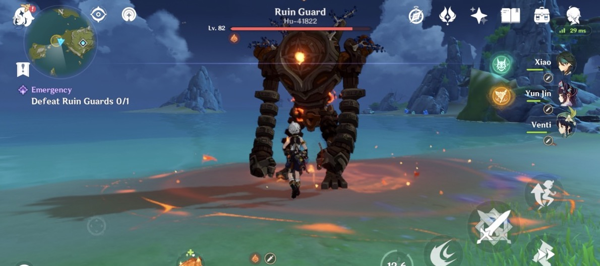
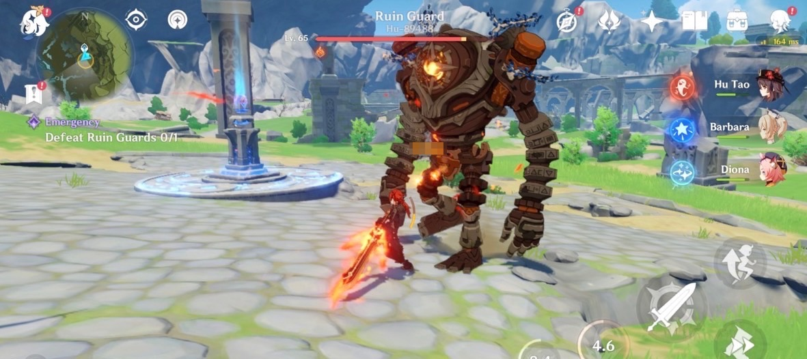
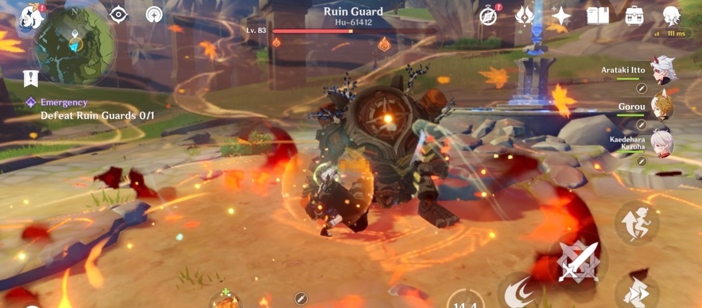
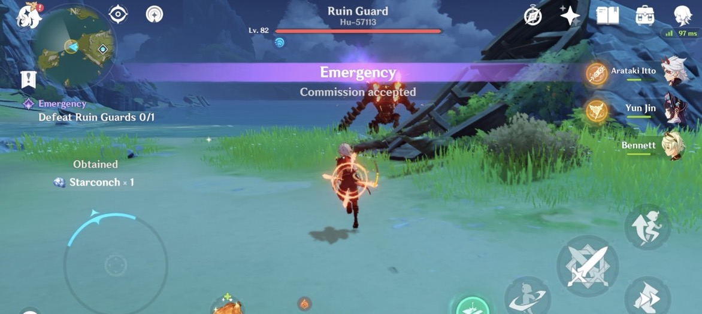

This is a guide to defeating some monsters in the game.
Most monsters such as hilichurls do not really need any special strategy.
Just go unga bunga on them, and they will disappear.
Most of the small enemies are Venti showcases anyways.
But some monsters have special resistances or mechanics that may need some understanding
to defeat more easily.
Regular Enemies
Specters: use Yoimiya, Aloy. Ganyu's problem is that she attacks too slowly and can be interrupted by the specters' frequent attacks.
With Yoimiya or Aloy you don't have to worry as much about aiming and can get more shots in between specter attacks.
Raiden is also a great pair with Yoimiya for killing Specters specifically.
Rifthounds: for Geo dogs, use Itto.
For Electro dogs, use Raiden Shogun or Cyno.
Otherwise, they are just HP sponges.
The whelps (the small dogs) can be pulled and lifted by Venti and other vacuum abilities, but the big dogs cannot.
Shields are useless against these.
Bring a healer.
Looks like the CIA's plan is foiled this time.
Oh if you have a shield you don't need healing.
That is bs. Only idiots think like that.
Serpent knights: another anti-shield enemy. If you use a shield, and they attack you,
they will gain certain buffs, like generate their own shield or go into beserk mode.
Combining serpent knights with rifthounds sounds like the perfect nightmare for shield simpers.
Fungi: these can drop two different types of materials depending on what element you use on them.
If you use pyro or electro on them they will drop a special kind of material.
Otherwise they will drop another kind of material.
This is important since certain characters rely on one type of fungi drops but not the other.
So you may sometimes have to use (or avoid using) pyro/electro on them.
Ruin enemies: machines built by Khaenriah, have increased physical RES, some have weak spots




Ruin guard enemiesMirror Maiden enemy
Enemies with shields
Fatui Skirmishers: these have armor that reduce incoming damage.
For Pyro fatui use Hydro, for Electro fatui use Cryo, for Hydro fatui use Electro, for Cryo fatui use Pyro,
for Geo fatui use heavy attacks (claymore, plunging, geo, explosions),
for Anemo fatui use anything.
Abyss Mages: these have shields that block damage.
The shields can be damaged with any kind of attack but will break more easily when the proper element is used.
For Pyro mage use Hydro, for Cryo mage use Pyro (Electro also ok), for Electro mage use Pyro/Cryo/Hydro,
for Hydro mage use Dendro or Cryo (Pyro/Electro also ok).
If there are multiple mages of different elements close together, use Anemo to swirl the elements and use them against each other.
This is swirl at its finest.
Hydro Herald: use Cryo or Dendro. Chongyun's infusion works well here. Alhaitham also works very well here.
Electro Lector: use Pyro or Dendro. Bennett works well here. Diluc, Dehya, any pyro with no ICD on their skills also works well.
Pyro Lector: use Hydro
As of 3.0, we do not have dendro abyss mage, dendro fatui, or dendro.
But we do have Dendro specters (3.0) and dendro slimes (since 1.0).
Pyro, Cryo, Electro specters were introduced in 2.4 with Enkanomiya.
Anemo, Geo, Hydro specters were introduced in 2.1.
Regular Bosses
Oceanid: use characters that can hit the birds.
These include Yoimiya, Cyno, Itto, Scaramouche, Aloy.
Alhaitham also works here.
Even Xiao can hit the birds by jumping up.
Sub-dps like Dehya, Yae, Raiden E can also hit the birds.
For elements Pyro, Electro, Dendro, Cryo work.
Bring a healer and/or shielder.
Maguu Kenki: an anti-ranged character boss, to oppose the ganyu simps of the world.
The Maguu Kenki will block ranged attacks such as bow shots.
The game needs more enemies like this.
Thunder Manifestation: use Dendro and Pyro. Alhaitham, Nahida, Yoimiya work well here.
Ganyu's problem is same as with specters.
Bring a shield too.
Catalysts like Mona can also work.
Golden Rifthound: during the shield phase has 3 skulls that take 3GU of geo hits (or ~38 non-geo hits) to break.
These skulls are not like other geo shields but are like gauge/rage meters instead.
Note some geo attacks that apply 2GU geo (like Yun Jin's abilities) will fill the meter faster.
Even the Anemo MC (hold E) works here.
In general bring a geo character (or AMC) and preferably a healer too as the boss will also apply corrosion.
Like other geo rifthounds, it can have decreased geo RES.
Itto and Geo teams (like Xiao double Geo) are very effective.
Jadeplume Terrorshroom: using pyro or electro on it will make it transmute into different states, similar to the fungi.
That is, using electro will build up its fury. When it reaches full fury it will become activated and attack more viciously.
Using pyro will make it lose fury and can put it in the scorched state. It will then release spores.
Wenut: this has increased anemo res and short windows where it is vulnerable.
Quickswap units such as Alhaitham and Raiden are effective here.
Hypostasis
The hypostasis are named after letters of the Hebrew alphabet/abjad.
Electro hypostasis: use Dendro and Pyro. Alhaitham, Nahida, Yoimiya work well here.
In general, dendro is probably the best element to use against electro elemental enemies like electro slimes, etc.
Cryo hypostasis: use pyro.
Pyro hypostasis: use hydro.
Hydro hypostasis: use Dendro and Cryo for the shields/droplets.
Electro and Pyro are also useable. Alhaitham, Nahida work well here.
Dendro Hypostasis: bring dendro and electro. You can bring pyro too.
When it does the plunging attack, using pyro can make it stop.
After depleting its hp it will summon three dendro crystals which will drain the hypostasis' life.
Activate them using dendro. One can speed up the draining by further applying electro to the crystals.
One can also attack the hypostasis with dendro to further drain its hp.
Weekly Bosses
Fatui
Childe (11th of the harbingers)
He has increased Hydro and Electro RES.
Just use any other element for DPS.
Rosalyn: Crimson *itch of Flames (8th of the harbingers)
She has increased Pyro and Cryo RES so too bad Hu Tao and Ganyu.
Use Anemo, Electro, Geo, Physical, or Hydro DPS against her.
Raiden, Xiao, Eula, Childe, Itto all work well in executing Rosalyn.
Bring a healer as the environment will do dot.
The USA should just accept ganyu is inferior for this boss.
Rosalyn is made as a punching bag for the majority of the fans that despise ganyu
and her perverted CIA suitors.
Those suitors are like Penelope's suitors in the Greek classic the Odyssey.
Eventually they all got slaughtered by Odysseus.
Scaramouche (6th of the harbingers)
This is the gundam boss. In phase 2, a dendro creature will accompany you and fire at Scaramouche's shield.
When this creature is fully charged, it can unleash a more powerful dendro blast to deplete the shield even further.
One can shoot at the electro symbol at the center of his body
to charge the firing creature faster (will give 3 particles).
Sometimes, Scaramouche will leave behind elemental mines (cryo, hydro, pyro).
Breaking the gauge on these mines will give extra particles to charge the creature.
After Scaramouche's shield breaks, he will leave 4 electro turrets/cubes that have electro shield gauges.
The electro turrets/cubes will break more easily when using dendro and pyro.
Nahida and Bennett are some of the best characters to use against Scaramouche.
During this time, Scaramouche will charge up his ultimate move.
If the turrets are not destroyed in time,
Scaramouche's setsuna shoumetsu (刹那消滅 chana xiaomie) is a nuke that will one-shot you.
After destroying the turrets, use the sigils to teleport to the platform at his upper body,
which will have decreased RES (similar to how Raiden goes into resting mode after her powered-up phase).
This is the site for many dps showcases.
Others
Azhdaha
There is the cuck strategy and then the chad strategy.
The cuck strategy is to look at which elements Azhdaha will be and then bring a DPS of the appropriate element to oppose it.
For example, if Azhdaha is Cryo and Hydro, bring a Pyro or Electro DPS.
The issue with this is that you need multiple elemental DPS built,
and you always need to change depending on Azhdaha's element.
The chad strategy is to realize that on average Azhdaha will have increased RES to Physical and every element
except Anemo and Dendro.
Azhdaha only has 10% RES to Anemo and Dendro, but increased RES to everything else on average.
So one chad strategy is to use Xiao.
It does not matter what Azhdaha is infused with, Xiao and Anemo characters will do the same damage regardless.
Similarly, with regards to RES, Xiao has an advantage against the Primo Geovishap and Geovishaps regardless of their infusion.
One can also use dendro dps like Alhaitham to similar effect.
Also bring a shielder and preferably a healer.
If you don't have a shield, learn how to dodge.
Even if you are ranged, Azhdaha can still attack you from afar so bow users do not really have any advantage.
And if you have a shield, it basically makes no difference whether you're ranged or melee.
Raiden
Raiden has two forms: unshielded and shielded.
While unshielded she will build up fury when you attack her.
When fury is full, she will summon an electro shield.
The electro shield can be depleted with pyro, dendro, etc.
During her shielded phase, she can summon an ultimate move that can one-shot you.
To avoid death, you will need to charge up a spherical barrier.
Bringing an electro character helps charge up the spherical barrier faster.
Otherwise you get one-shotted even with a shield.